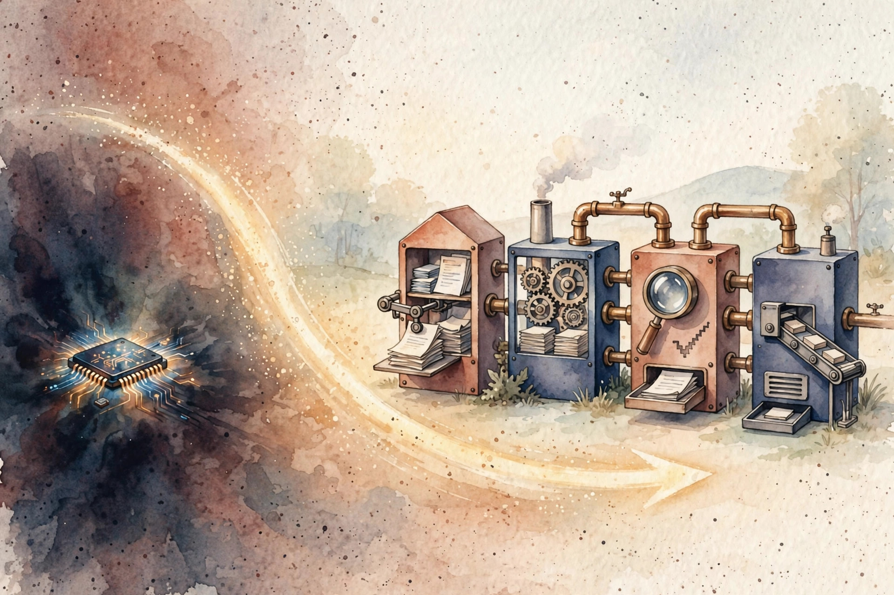
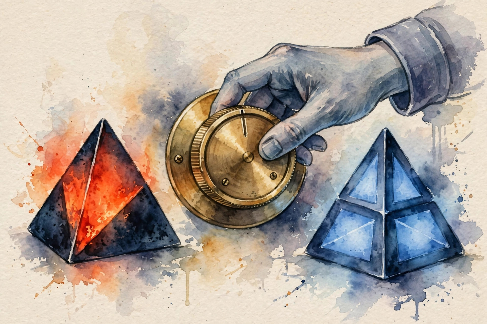

One language model guesses. A system looks things up, computes, and checks. This companion walks the full U01 arc: the model-to-system split, decomposition, honest evals, the attention engine, sampling, context, structured output, training stages, test-time scaling, and the architecture choice that closes the unit.
Source fact A claim or number taken from the lesson file content/v2/cs329z/lessons/u01_lesson.md. Each chart carries its lesson section.
Illustration A toy, picture, or simulation built for this page. It runs the lesson rule on tiny fixed inputs. It is not a lesson measurement.
Companion note My own synthesis. It joins lesson facts into advice. The lesson does not state it directly.
C01…C12 Concept numbers from the lesson.
Sourcing. No full lecture transcript exists for these sessions. The lesson maps C01 to C03 to session S01 (23 Sep 2026) and C04 to C10 to session S02 (28 Sep 2026), source-supported at schedule-title level only. C11 and C12 are requested extensions, taught as independent theory. This page narrates the lesson content, not a lecture recording.

Source fact A model maps tokens to tokens. A system joins components through interfaces: model, retriever, tools, checks. The lesson toy asks ten questions. Six need a fact from docs. Two need arithmetic. Two need both. The model alone scores 3/10. The system scores 8/10 at 4 times the token cost C01 contracts 2, 6.
The core derivation is a conjunction, not a sum. System accuracy is not the product of component accuracies. A fact question needs the retriever to return the fact and the model to use it. With retriever recall 0.8 and a model-use rate 0.9, the joint rate is 0.72 C01 contract 5.
The lesson also shows the dark side. With the retriever stubbed to return junk, the pipeline scores below the model-only 3/10. A bad component can drag the system under the model it wraps C01 contract 8.
A system wins only where every link in the chain holds.
Source fact Split a task into subtasks with typed interfaces and a check per subtask. The lesson toy: write marketing copy, then translate it, the SRC-04 prompt-chaining example. One call mixes style and translation errors. Two calls with a style check between them isolate the failure C02 contract 2.
The mechanism is error localization. If the final answer is wrong and subtask 2 passed its gate, the fault lies in subtask 1 or the gate itself. The gate between subtasks is the whole point. Without it the split is decoration C02 contract 5.
Numbers: stage 1 fails with probability 0.2, stage 2 with 0.1. The gate catches 90 percent of stage-1 failures and costs 50 tokens. Without the gate the final failure rate is 1 − 0.8 × 0.9 = 0.28. With the gate it falls near 0.12 C02 contract 6.
Decomposition is surgery with labels, and the gate is the surgery.
Source fact Two systems score 8/10 and 7/10 on your eval. Which ships? The standard error of 8/10 on n = 10 is 0.13. The 0.1 gap sits inside the noise. Answer: neither ships on this evidence. Grow the eval first C03 contract 2.
The eval is the specification. If you cannot say what good looks like on 50 examples, you cannot build toward it. The lesson derives the eval size needed to detect a gap delta: n near m(1−m)(z/delta)². For m = 0.8, delta = 0.05, z = 2: n near 256 C03 contracts 3, 5, 6.
A 10-item eval cannot resolve a 5-point gap. It can only tell you stories.
Source fact Attention(Q, K, V) = softmax(QKT/√dk)V. Each token asks a question (query), every token posts a label (key) and a message (value). The token listens most to the messages whose labels match its question C04 contracts 3, 4.
Why divide by √dk? If each coordinate of q and k is standard normal and independent, the dot product has variance dk. Without the scale, a large dk pushes scores into the softmax tails and gradients vanish. The division restores unit variance. The mechanism is variance control, not magic C04 contract 5.
Cost: with n = 4096, d = 1024, L = 32, one layer costs near 2n²d = 3.4×10¹⁰ FLOPs, and the full pass costs 1.1×10¹² FLOPs. Growing n from 512 to 4096 multiplies cost by 64 C04 contract 6.
Attention cost grows with the square of context length. Every context decision is a budget decision.
Source fact Decoding turns scores into choices. Greedy takes the max. Temperature sampling rolls a weighted die. Top-k throws away all but the k best faces. Top-p keeps adding faces until the mass reaches p. Each control changes a different property of the die C05 contract 3.
Toy logits [1.0, 2.0, 3.0]. At T = 1 the probabilities are [0.09, 0.24, 0.67]. At T = 0.2 they collapse to near [0.00, 0.01, 0.99]. At T = 3 they spread to [0.23, 0.32, 0.45]. Entropy rises from 0.23 to 0.83 to 1.06 nats. The max is log 3 = 1.10 C05 contracts 2, 5, 6.
One warning the lesson repeats: no temperature fixes a wrong argmax. If the model puts 0.99 on a wrong token, low T just repeats the error confidently C05 contract 11.

Temperature changes the odds of the draw. It cannot change which token the model believes.
Source fact KV cache per token = 2 × L × d scalars. At L = 32, d = 4096, fp16: 524,288 bytes per token, about 0.5 MB. At n = 128k that is 64 GiB, which is 68.7 GB, before the weights C06 contract 2.
The cache is memoization. During decode, the new token scores one query against n cached keys: O(nd) work per token instead of O(n²d). Prefill stays quadratic. At n = 128k the prefill FLOPs reach 4.5×10¹⁵ C06 contracts 4, 6.
And presence is not use. The lesson names the lost-in-the-middle pattern: evidence placed mid-context gets ignored. Position in the window matters, not just presence C06 contract 11.
Long context charges memory for the cache and time for the prefill. The window is short-term memory with a filing-cabinet bill.
Source fact The model answers that the price is 42 dollars. Your code needs a number. The schema {"price": number, "currency": string} turns prose into data. Validation is the handshake: anything downstream can rely on the shape only if validation runs C07 contracts 2, 3.
Toy: 100 outputs. 88 parse and validate, 9 parse but miss a field, 3 do not parse. Valid rate 0.88. With one retry on invalid and a 0.7 repair rate, the final rate is 0.88 + 0.12 × 0.7 = 0.964 C07 contract 6.
Watch the failure the lesson flags: the schema demands a field the model cannot know, like an invoice id. The model hallucinates it to satisfy the schema. The contract creates the lie C07 contract 11.
A schema check is a cheap gate that converts silent data corruption into a loud, retryable error.
Source fact Validation catches bad JSON after the fact. Masking prevents it during sampling. Toy: 5 tokens, logits [2.0, 1.5, 1.0, 0.5, 0.0]. Tokens 4 and 5 would break the JSON. Mask them and renormalize: p = [0.51, 0.31, 0.19]. Invalid tokens get probability exactly 0 C08 contracts 2, 6.
This is not a hack. It draws from P(token | token allowed): conditioning the categorical distribution on the allowed event gives exactly the masked softmax C08 contract 5.
The lesson warns about bad constraints: a regex that permits the empty object {} lets the sampler emit {} with high probability, and the pipeline starves. Constraints shape the distribution. Bad constraints shape it badly C08 contract 11.
Choose constrained decoding when validity must be guaranteed. Choose validation plus retry when the constraint is semantic.
Source fact Pretraining teaches the model how the world talks: next-token log-likelihood on trillions of tokens. Post-training teaches it how to behave: instruction pairs, then preference pairs of better versus worse responses. Same starting weights, different objective at the finish C09 contracts 2, 3.
The toy bigram: P("Paris" | "capital of France is") = 0.6 stays near 0.6 after SFT. But P("Sure! The capital is Paris.") moves from 0.05 to 0.55. The fact knowledge barely moves. The answer shape moves a lot C09 contract 6.
The failure mode: preference annotators reward sycophancy, and the model learns to flatter instead of help. The preference data represents the deployer values. Break that and the model optimizes the wrong target C09 contract 11.
Post-training changes what the model says far more than what it knows.
Source fact One sample passes with probability 0.3. Under independence, pass@8 = 1 − 0.7⁸ = 0.942. One weak model, eight tries, near-certain success on verifiable tasks C10 contracts 2, 6.
Three currencies: more samples (vote or pick the best), longer chains (think step by step), more search (explore and backtrack). All three spend tokens at inference to buy accuracy. The formula assumes independent samples and checkable success. Break either and the arithmetic lies C10 contracts 3, 4.
The lesson toy compares: small model with 8 samples wins at 0.942 and 8x cost, versus a bigger model with p = 0.6 at 4x cost per sample. But if the model makes the same mistake 8 times, a systematic error, pass@8 is 0.3, not 0.942 C10 contracts 6, 11.
Test-time scaling is an upper bound, not a promise. Correlated samples and missing verifiers erase the gain.
Source fact One LLM call with a good prompt on the 50-question eval scores 0.62 at 1x cost. The bar is set. Every added component must beat 0.62 per dollar C11 contract 2.
The keep rule: component i stays if (b_i − b_0)/(c_i − c_0) clears the team bar. Toy: add retrieval, 0.74 at 3x: gain per cost 0.06. Add tools, 0.78 at 5x: marginal 0.02. With a bar of 0.03, retrieval stays and tools go. The table decides, not the demo C11 contracts 4, 6.
Two baseline traps: the baseline overfits a 20-item eval, so every component fails against a lucky score. Or the baseline is a straw man at 0.1, so any component looks like a breakthrough. The bar must be honest C11 contract 11.
Without a baseline, every new component is a story. With one, it is a result.
Source fact Four tasks, four architectures. Classify support tickets: single call. Draft then translate: prompt-chaining workflow. Answer over 10k docs: RAG compound system. Resolve a bug with unknown steps: agent loop. One property decides each: fixed path versus open steps, corpus size versus memory C12 contract 2.
The mechanism is a decision table, not a formula. Patterns are ordered by cost: single call, workflow, RAG system, agent. So the choice is the cheapest sufficient pattern. Toy numbers: single call 0.35 at 1x, RAG 0.78 at 4x, agent 0.81 at 12x. RAG wins the table C12 contracts 5, 6.
The lesson warns against always-agent future-proofing: agents trade latency and cost for flexibility. Pay that trade only when the task needs it C12 contract 10.
Architecture choice is triage. Is the path known? Is the knowledge in weights or in docs? Is success checkable?
| # | Concept | Transferable principle |
|---|---|---|
| 01 | Model vs system | Before adding a component, name the conjunction it must satisfy and the interface where it can break. |
| 02 | Decomposition | Split only where a cheap, strict gate can verify the cut. |
| 03 | Evals first | Write the eval before the system. Quote no score without its standard error. |
| 04 | Attention | Before stuffing context, compute n²d. If the number scares you, retrieve instead. |
| 05 | Decoding | Use low T for one deterministic answer, high T for diverse votes. Never use T to fix the argmax. |
| 06 | Context | Retrieve on demand beats stuffing the window, unless the task needs cross-document reasoning in one pass. |
| 07 | Structured IO | Never demand what the model cannot know. A forcing schema manufactures the hallucination it was built to stop. |
| 08 | Constrained decoding | Audit your grammar as carefully as your model. A bad mask can starve the pipeline. |
| 09 | Pre/post-training | Match the intervention to the layer. Training manners cannot fix missing knowledge. |
| 10 | Test-time scaling | Buy test-time compute only when you can check the answer. |
| 11 | Baseline | Build the simplest thing first, measure it, then let each addition argue for its life. |
| 12 | Architecture choice | Fancy patterns on simple tasks are cost without gain. Let the properties choose, not the fashion. |
Companion note The lesson plates u01_f01 through u01_f06 (before/after pairs from the original toys) sit behind this page's figures: f01 model-to-system, f02 decomposition and eval gates, f03 decoding histograms, f04 attention cost scaling, f05 schema enforcement, f06 the pass@k curve. Each chart above re-plots the same lesson numbers with its section citation.